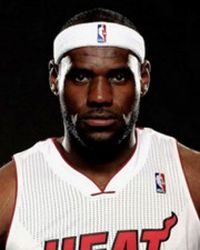

克里夫蘭騎士-詹皇
球隊簡介:克里夫蘭騎士隊，球隊成立於1970年，目前所在城市是美國俄亥俄州克里夫蘭市，主場為速貸球館。

LeBron James:生於美國俄亥俄州阿克隆，職業籃球運動員。現效力於NBA聯盟克里夫蘭騎士隊，場上位置為小前鋒。繼麥可·喬丹後第二位單季取得NBA總冠軍、NBA最有價值球員、NBA總決賽最有價值球員和奧林匹克運動會冠軍獎牌完成單季大滿貫的籃球員。
- LBJ自己也計畫走上求學之路，只要時間允許，就會進入大學念書。連學校系所都已經挑好了，家鄉奧克朗大學的歷史系，LBJ同時也有雙修數學系的打算。
- LBJ表示自己熱愛歷史，希望能好好深入了解，我想知道所有的事件是如何串聯在一起的 ， 人類建立了文明，讓這個世界如此美好，而歷史就是這一切的關鍵，我很喜歡這一點。LBJ 接著說道:我喜歡到處走走，尤其每年夏天去旅遊的地方，更是自己的最愛。欣賞人類建築的藝術是很特別的，我想知道在過去的時間點是誰統治了這塊土地，能學到這些真的很酷。或許在不久的將來，我們就能見到LBJ踏入大學的一天，完成自己的歷史夢。
- LBJ說：「正如我所說的，這個賽季發生了一些奇怪的事情、一些不幸的事情，當然也有一些好事。但歸根到底，我不能再去關注過去。當下才是最重要的事情。我們必須要擊中精力，讓自己在季後賽第一場就保持充沛的精力。我感覺很棒，絕不回頭。」